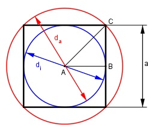

Aufgabe 319 Einem Würfel mit der Seitenlänge a ist eine Kugel ein- und eine umbeschrieben. In welchem Verhältnis stehen ihre Volumina und ihre Ober- flächen zueinander?

Volumen: Würfel: VW = a3 Innere Kugel: di = a d3 * л a3 * л Vi= --------- = --------- 6 6 Äußere Kugel: Satz von Pythagoras im Dreieck ABC: AC2 = AB2 + BC2 AB = AC = a/2 AC2 = (a/2)2 + (a/2)2 = a2 a2 2 * a2 a2 = ---- + ---- = -------- = ---- |√ 4 4 4 2 a AC = ---- = ra √2 2 * a da = 2 * ra = ------- = √2 * a √2 л * da3 л * (√2 * a)3 Va = ---------- = ----------------- = 6 6 л * 2 * √2 * a3 л * √2 * a3 = ------------------ = ------------- 6 3 VW a3 1 ---- = --------- = ------ Vi a3 * л л -------- --- 6 6 л oder VW : Vi = 1 : --- = 1 : 0,523 6 VW a3 1 ---- = --------------- = ---------- Va л * √2 * a3 л * √2 -------------- -------- 3 3 л * √2 oder VW : Va = 1 : --------- = 1 : 1,48 3 a3 * л ---------- Vi 6 1 ---- = --------------- = --------- Va л * √2 * a3 2 * √2 ------------- 3 oder Vi : Va = 1 : 2 * √2 = 1 : 2,828 VW : Vi : Va = 1 : 0,523 : 1,48 Oberfläche: Würfel: OW = 6 * a2 Innere Kugel: Oi = л * di2 = л * a2 Äußere Kugel: Oa = л * da2 = л * (√2 * a)2 = л * 2 * a2 OW 6 * a2 1 ---- = -------- = --- Oi л * a2 л --- 6 л oder OW : Oi = 1 : --- = 1 : 0,523 6 OW 6 * a2 1 ---- = ------------ = --- Oa л * 2 * a2 л --- 3 л oder OW : Oa = 1 : --- = 1 : 1,047 3 Oi a2 1 ---- = -------- = --- Oa 2 * a2 2 oder Oi : Oa = 1 : 2 OW : Oi : Oa = 1 : 0,523 : 1,047